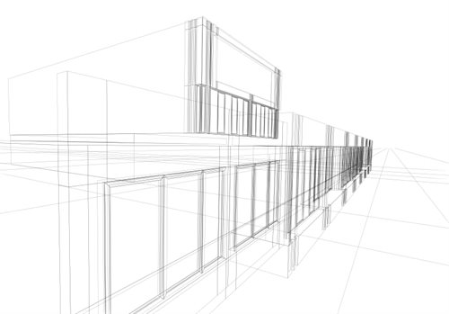

|
Share Something
Body
+ add more tags
|

Blog Post using
SharePoint
|
Blog Post using
Word
|
Document Libraries
Navigate to site and library, then click a document to attach...
.axd)
| has 4 new images in OpenAsset.
View all 4 photos.ashx)
|
| #FromTheField: Steel is Up at The Devonshire Centre |
| New Knowledge Base Article: Chilled Beams
Thinking about incorporating chilled beam technology into your next project? Well Carl Lewis and I have just the knowledge base article for you
Thinking about incorporating chilled beam technology into your next project? Well Carl Lewis and I have just the knowledge base article for you. We've collected design, benchmarking, calculation, and analysis tools into a one-stop shop for all things chilled beams. Check it out! We'd love to hear your feedback.
|
| Do you have boilerplate language for improving IAQ in Lab Buildings?
I just got an #RFP from University of California Santa Barbara for a new Chemistry Building. There is an extensive section about Indoor Air Quality in the proposal (they want to pursue LEED Platinum on the building) and I'm looking for some examples from prior projects. I'm on a tight deadline, so the sooner the better.
|
| Seeking Inspiration for our New Website
As many of you know, we've committed to launching a new website by January 1, 2015. We began working with a digital agency last week, and we're in the
As many of you know, we've committed to launching a new website by January 1, 2015. We began working with a digital agency last week, and we're in the process of gathering design precedents and inspiration.
We're casting a wide net and certainly not limiting our exploration to AEC.
Please share your thoughts in the comments below by Friday.
Less
|
| #OnTheMove: Matt McCullah is now the Campus Architect at Boston University
I've been tracking a couple opportunities at BU for the last few years. It sure would be nice to get an introduction. Does anyone know Matt?
I've been tracking a couple opportunities at BU for the last few years. It sure would be nice to get an introduction. Does anyone know Matt?
Less
|
| We are chasing a new opportunity, WFU :: Student Recreation Center with Wake Forest.
The fee is $2,400,000.00. Ann Johnson has the ball. Opportunity Description: Wake Forest is going to be putting out a RFP on a new Student Rec Center in
The fee is $2,400,000.00. Ann Johnson has the ball. Opportunity Description: Wake Forest is going to be putting out a RFP on a new Student Rec Center in May. This is going to be approximately 100,000 of new construction where the old Babcock Busines Building used to sit. Carl and I have been tracking this for a few years and are well positioned with the facilities director and dean.
|
| Chabot Data Center in the News! |
| Architect Magazine R+D Awards: Which project should we submit? |
| #OnTheBoards in Conference Room 3: ASU Informatics Conceptual Design
The ASU :: School of Informatics team is preparing to present our first set of concepts to the client next week. We're looking for your feedback

The ASU :: School of Informatics team is preparing to present our first set of concepts to the client next week. We're looking for your feedback by the end of the day Friday. Come on by and let us know what you think!
|
| Welcome Sally Little!
Sally Little and I worked together in New York on several projects. I'm very happy to have her join us in the #SanFrancisco office as a Senior
|
| Please join me in congratulating Steve Anderson on passing the LEED AP BD+C exam! |
| Winner of 2014 Young Architects Program Features Self-Assembling Bricks Made of Corn Husks and Mushroom Root
It reinvents the most basic component of architecture--the brick--as both a material of the future and a classic trigger for open-ended design
It reinvents the most basic component of architecture--the brick--as both a material of the future and a classic trigger for open-ended design possibilities, MoMAs architecture and design curator, Pedro Gadanho, said in a press statement. If this mushroom brick wonderland holds up for the whole summer, maybe well start seeing more applications of this type of self-assembling material. A carbon-neutral construction process is a pretty tantalizing offer. More here: http://www.fastcodesign.com/3026113/tower-to-rise-at-moma-ps1-with-self-assembling-bricks
|
| Does anyone know of a good Illustrator tutorial?
I need to learn Illustrator to put together a signage package for the Harvard University Life Sciences Research Center project. I used it once (many years ago) but I don't remember much. I found tons of videos online, but before I sink time into them, I thought I'd see if any of you have a recommendation. Thanks in advance.
|
| Investigating the Perception of Sound and Space
"Recalling Tinguely's poetic machines, Alexander Calder's mobiles or Buckminster Fuller's structures, Tessel is a sculpture that involves time and
"Recalling Tinguely's poetic machines, Alexander Calder's mobiles or Buckminster Fuller's structures, Tessel is a sculpture that involves time and movement to continue the quest for a synesthetic perception of sonic and spatial phenomenons."
Wow, right?
Less
|
| BOOK: Design Energy Simulation for Architects
Kjell Anderson of LMN Architects has written a new overview (now available for pre-order) of design simulation technologies and methods. I was lucky
Kjell Anderson of LMN Architects has written a new overview (now available for pre-order) of design simulation technologies and methods. I was lucky enough to read the galleys and highly recommend it. Here's an excerpt from the Amazon description: "Within each case study, author Kjell Anderson mentions the software used, how the simulation was set up, and how the project team used the simulation to make design decisions. Chapters and case studies are written so that you learn general concepts without being tied to particular software. Each chapter builds on the theory from previous chapters, includes a summary of concept-level hand calculations (if applicable), and gives comprehensive explanations with graphic examples. Additional topics include simulation basics, comfort, climate analysis, a discussion on how simulation is integrated into some firms, and an overview of some popular design simulation software." You can read an interview with Kjell here: http://aiawa.org/2013/05/28/interview-design-energy-simulation-for-architects-w-kjell-anderson-aia/
|
| New Knowledge Base Article: Exporting your Revit Model
Mike Brady and I have been working on this article for the last few weeks. We think it is in pretty good shape, but we'd love to get your
Mike Brady and I have been working on this article for the last few weeks. We think it is in pretty good shape, but we'd love to get your feedback on how we can make it better. Thoughts?
Less
|
| Now Available: AU 2013 Classes On Demand
There are over 200 videos on design, engineering, business strategies, new technologies, best practices, and engineering certification
AU Classes on DemandBoost your career with AU online classes for construction and manufacturing training and engineering certification.
There are over 200 videos on design, engineering, business strategies, new technologies, best practices, and engineering certification preparation available. Over the next few weeks I'll be screening selected videos at #TechTuesdays. Stay tuned...
AU Classes on DemandBoost your career with AU online classes for construction and manufacturing training and engineering certification.
Less
|
| Sensing Spaces: Architecture Reimagined
I visited this exhibition yesterday evening. It was fascinating to see seven architectural practices from six countries and four continents share
I visited this exhibition yesterday evening. It was fascinating to see seven architectural practices from six countries and four continents share their perspective. If you are in the #London office, or visiting London between now and April 6, 2014, I highly recommend you visit the RA and experience these large scale installations in-person. More information here: https://www.royalacademy.org.uk/exhibitions/sensingspaces/about-the-exhibition/
|
| #DesignCrit: Georgia Tech Student Housing
The Georgia Tech Student Housing Team is preparing for a big user group presentation on 3/21. We'd like to bring you to to speed on the design as well
The Georgia Tech Student Housing Team is preparing for a big user group presentation on 3/21. We'd like to bring you to to speed on the design as well as hear your (constructive) criticism.
Less
|
1 - 20
People Who Like This
Loading...

|
|
|
|